PENINSULA RECONSTRUCTION · CURRENT REVIEW
Lighthouse above · hidden passage below
Corrected reference topology: the existing lighthouse sits on the outer tip. A low passage crosses directly underneath its foundation and exits into the cove behind it. A separate upper trail reaches the tower. Town buildings, pier, mountain and protected ground remain fixed; localized runtime support now distinguishes the upper terrace from the lower tunnel. This is structural blockout, not texture, styling or artwork approval.
Preservation: PASS · 122,869 protected ground samples · 0 changed. Layered topology/traversal: passed.
20 captured views · 0 capture errors · source unchanged during capture.
Reference first: lighthouse placement is not optimized for city-camera visibility. The exact courtyard has protected-building occlusion, while globe curvature and normal close-up framing can obscure or crop the tower elsewhere. These observations do not justify moving the lighthouse, changing the existing model, or adjusting camera framing.
Preservation resultsLayered traversal resultsMethod and scopeOpen annotated map
Actual ground and access layout
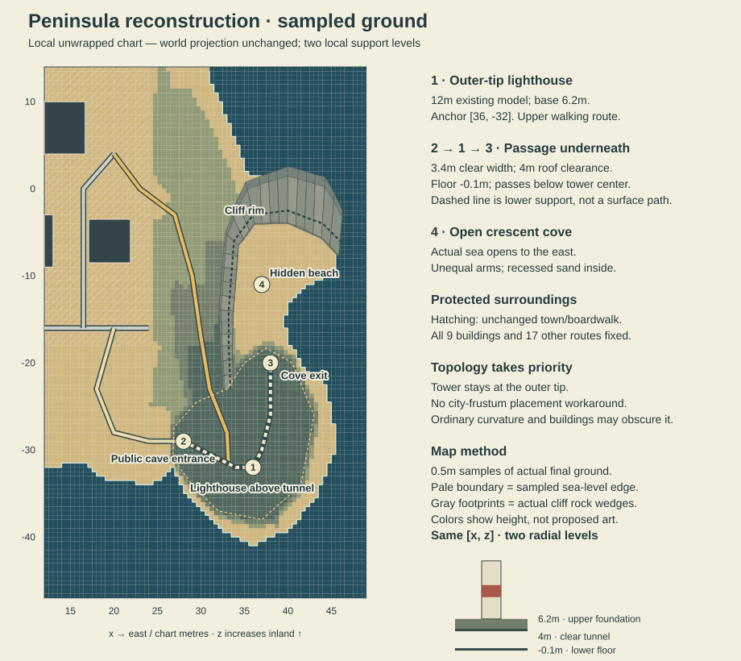
Normal walking views and globe context
Images are direct renderer captures. Debug placement changes only visitor position and ordinary heading. Captured 2026-09-12T22:26:53.529Z; source fingerprint 42d61032e0b2a6e1436a700f395df05d90a8a6bfc30259a5367062260f7c9400.
 Protected courtyard / fresh loaddesktop · [0.0, 8.0] · dry support · camera 4.80m
Protected courtyard / fresh loaddesktop · [0.0, 8.0] · dry support · camera 4.80m
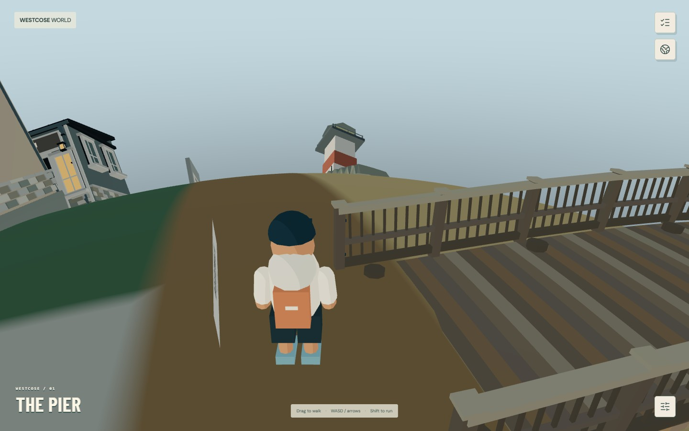
Protected central boardwalk / ordinary tower directiondesktop · [0.0, -16.0] · dry support · camera 4.80m
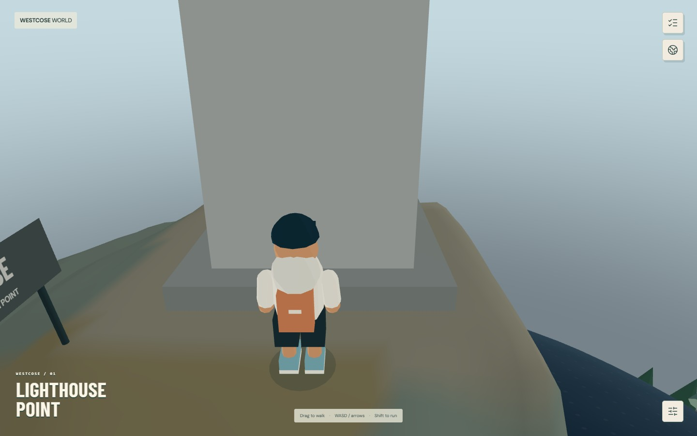
Lighthouse terrace / close walking viewdesktop · [33.2, -32.0] · dry support · camera 4.80m
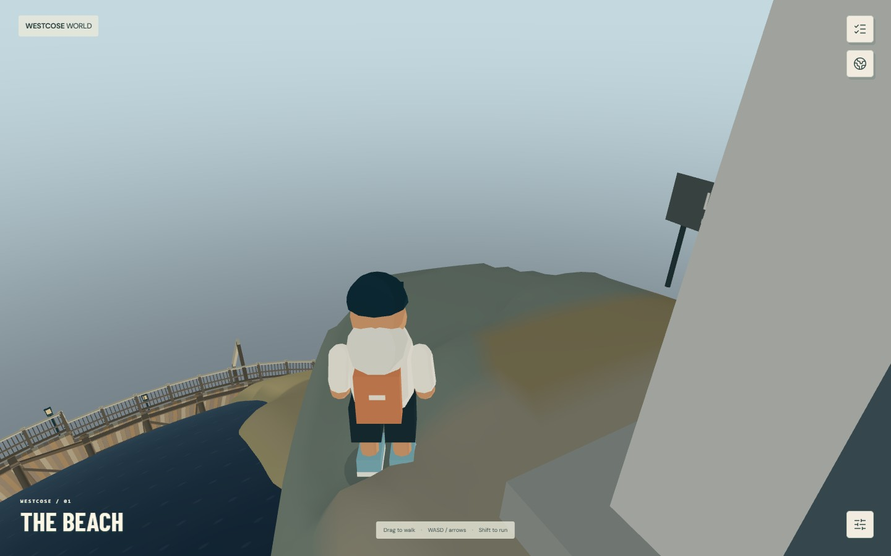
Terrace return toward towndesktop · [33.1, -35.5] · dry support · camera 4.80m
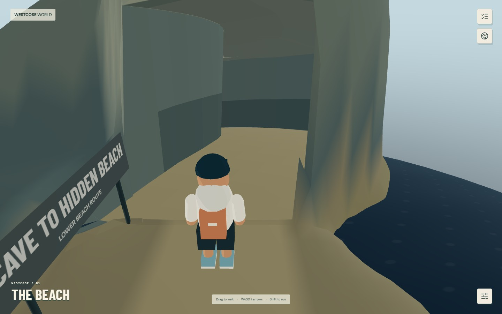
Far public-beach approach to the cavedesktop · [25.0, -29.0] · dry support · camera 4.80m
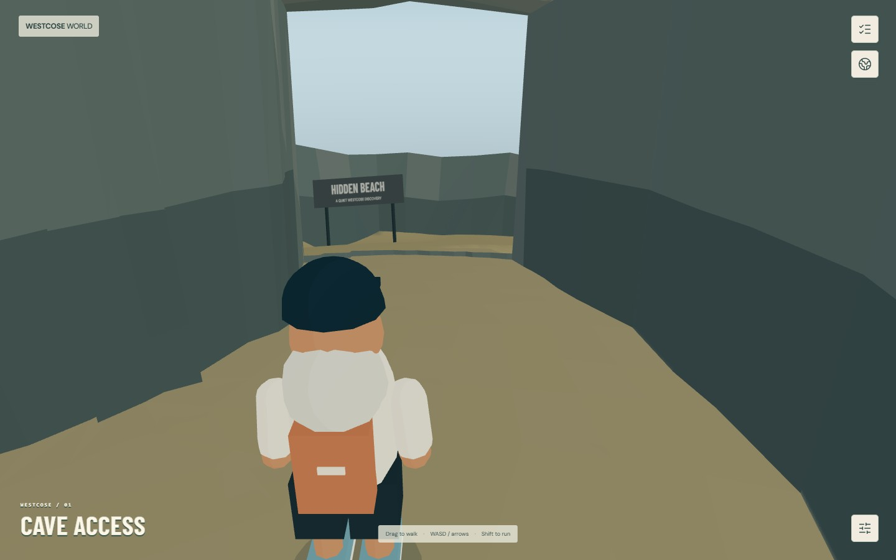
Lower passage directly beneath lighthouse foundationdesktop · [36.0, -32.0] · dry support · camera 2.94m
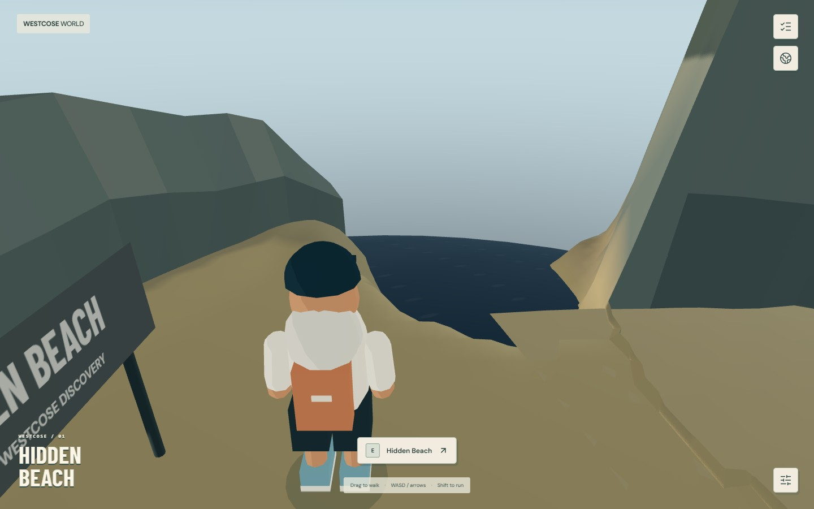
Hidden beach toward open seadesktop · [37.0, -11.0] · dry support · camera 3.58m
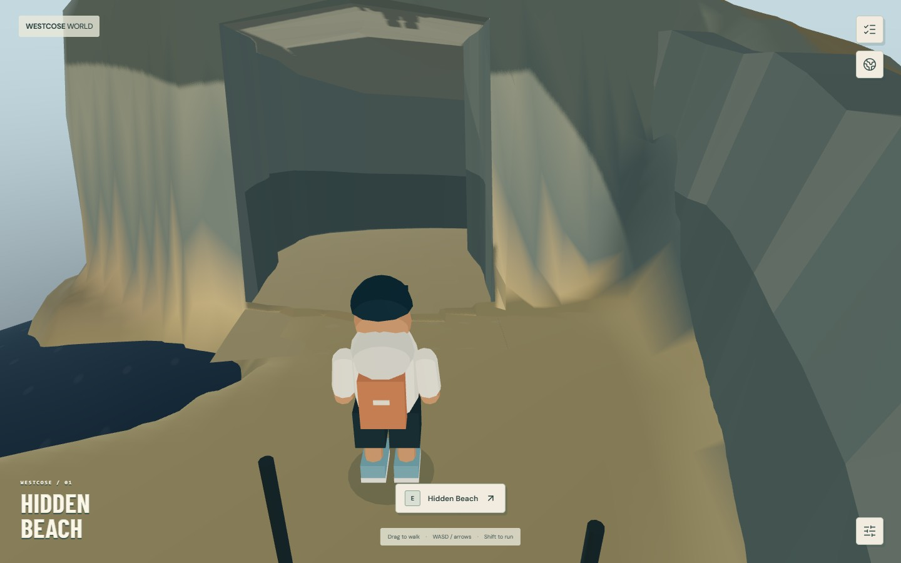
Cove behind lighthouse / looking toward exitdesktop · [37.0, -11.0] · dry support · camera 4.80m
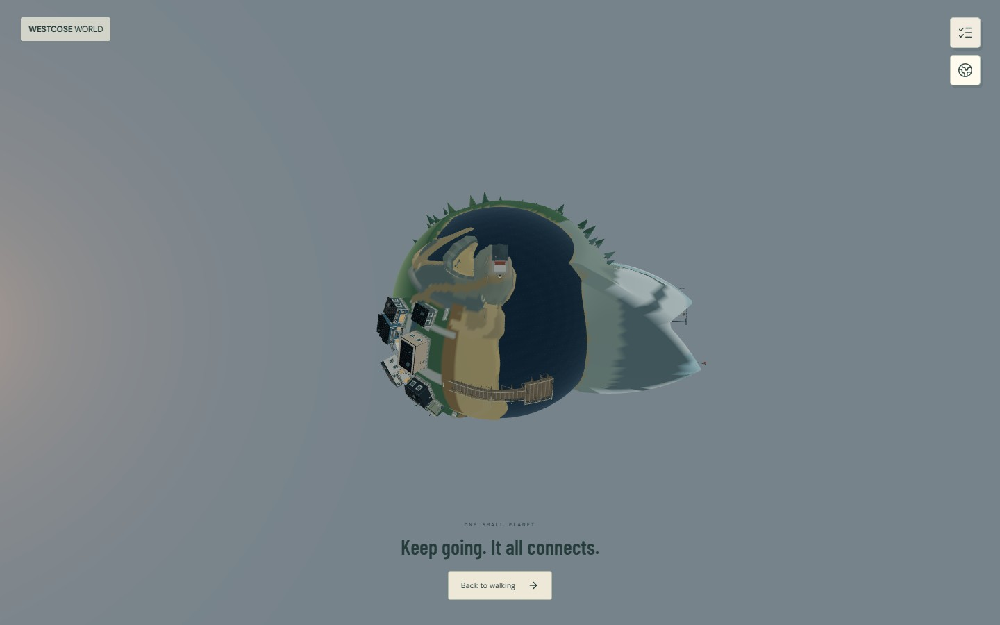
Globe / outer-tip lighthouse and covered headlanddesktop · [33.2, -32.0] · dry support · camera 4.80m
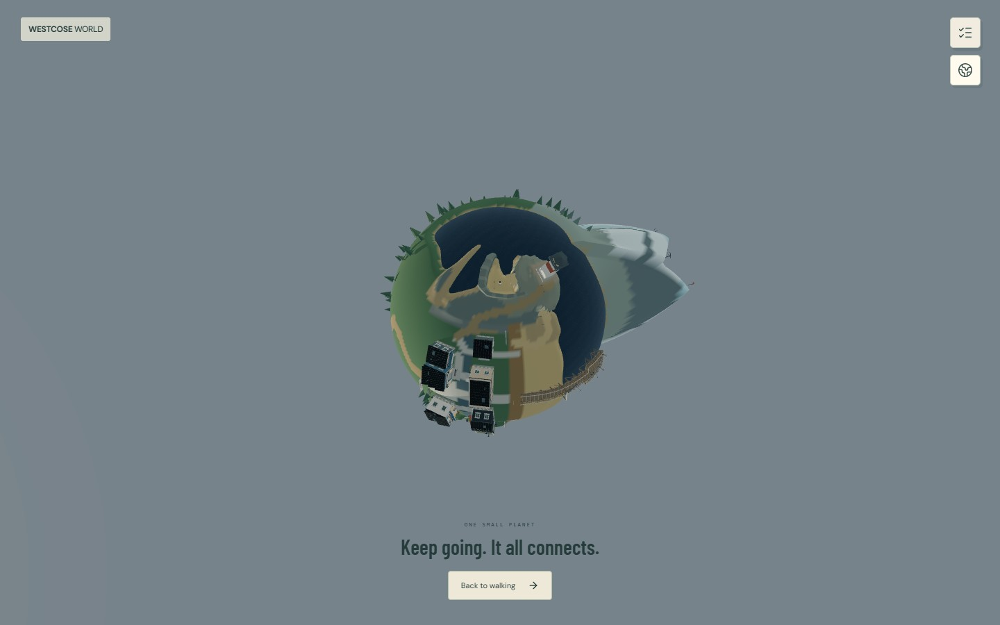
Globe / cove and eastern shoredesktop · [37.0, -11.0] · dry support · camera 3.58m
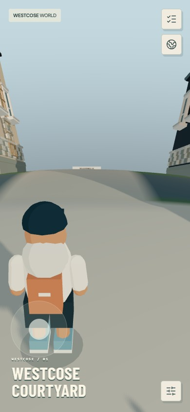
Protected courtyard / fresh loadphone · [0.0, 8.0] · dry support · camera 4.80m
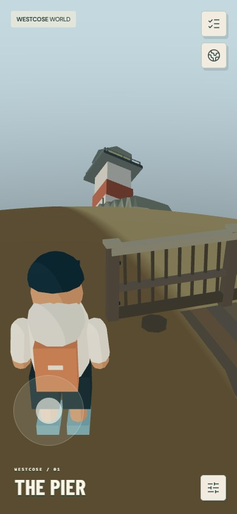
Protected central boardwalk / ordinary tower directionphone · [0.0, -16.0] · dry support · camera 4.80m
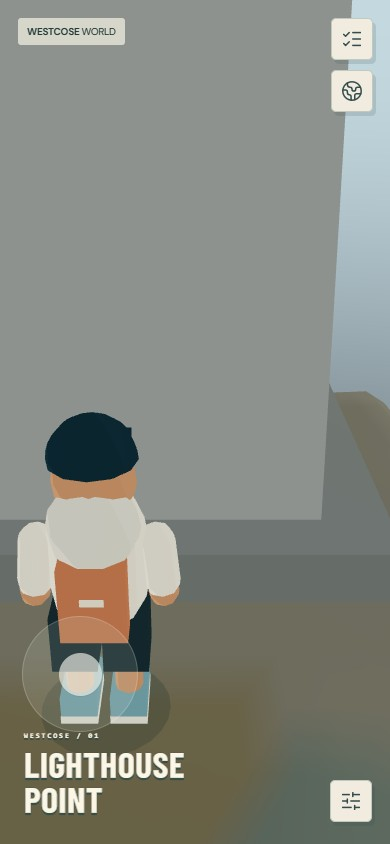
Lighthouse terrace / close walking viewphone · [33.2, -32.0] · dry support · camera 4.80m
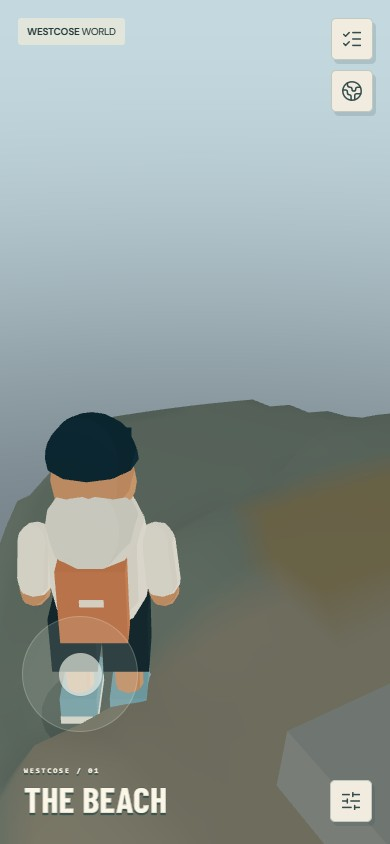
Terrace return toward townphone · [33.1, -35.5] · dry support · camera 4.80m
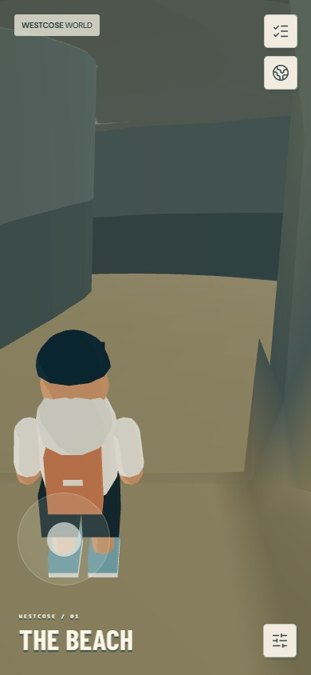
Far public-beach approach to the cavephone · [25.0, -29.0] · dry support · camera 4.80m
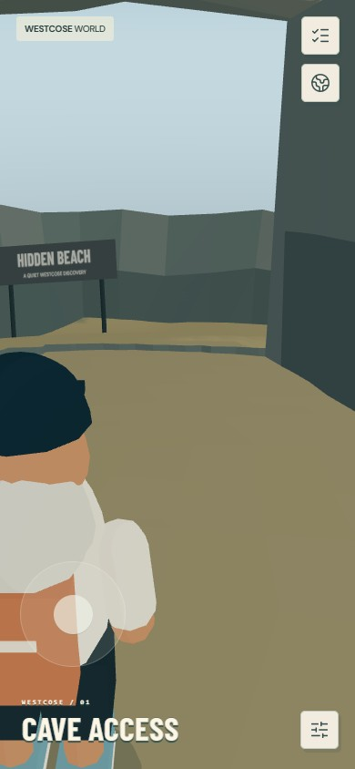
Lower passage directly beneath lighthouse foundationphone · [36.0, -32.0] · dry support · camera 2.94m
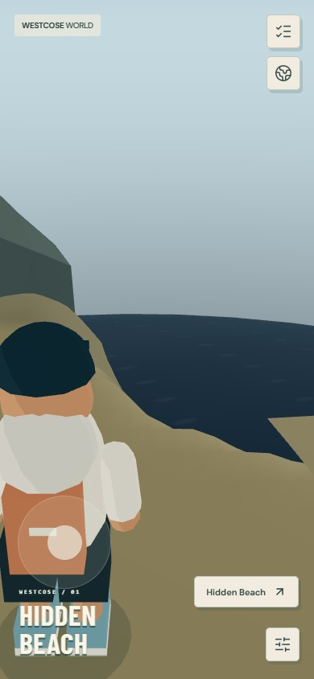
Hidden beach toward open seaphone · [37.0, -11.0] · dry support · camera 3.58m
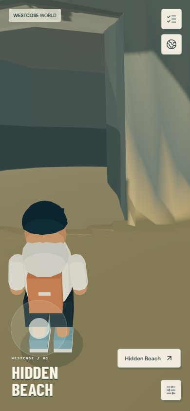
Cove behind lighthouse / looking toward exitphone · [37.0, -11.0] · dry support · camera 4.80m
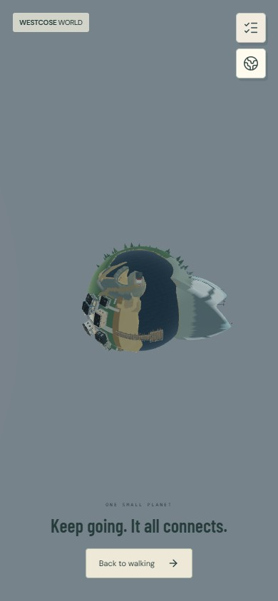
Globe / outer-tip lighthouse and covered headlandphone · [33.2, -32.0] · dry support · camera 4.80m
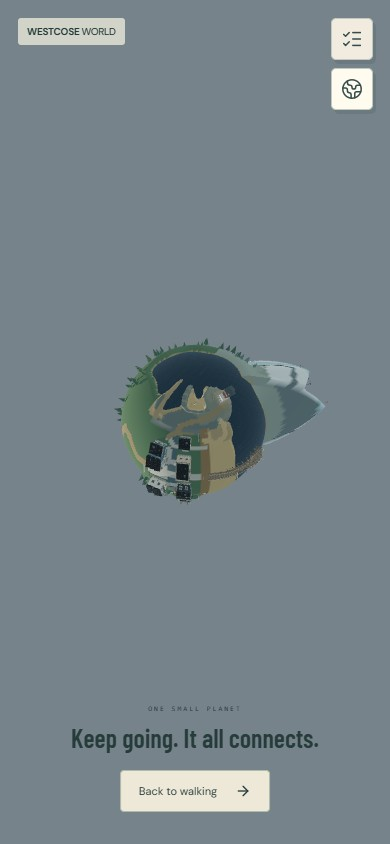
Globe / cove and eastern shorephone · [37.0, -11.0] · dry support · camera 3.58m